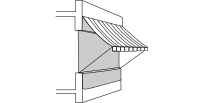

2019年
問題93日射・日照及びその調整手法に関する次の記述のうち，最も不適当なものはどれか．
（1）樹木の緑葉の日射反射率は，コンクリートに比べて大きい．
（2）ライトシェルフとは，部屋の奥まで光を導くよう直射日光を反射させる庇ひさしである．
（3）オーニングとは，窓に取り付ける日除けの一種である．
（4）照返しの熱量は，照返し面での日射反射量と，その面での熱放射量とに分けられる．
（5）内付けブラインドの日射遮蔽効果は，外付けブラインドに比べて小さい．
2019年
問題93正解（1）頻出度AA
樹木の緑葉の日射反射率は，10％程度で，コンクリート（10～50%）に比べて大きいとはいえない（2019-93-1表参照）．
| しっくいの白壁，新しいアルミシート防水表面 | 90% |
| レンガ，コンクリートなど一般材料 | 10～50％ |
| 樹木 | 10%前後 |
| 芝生 | 25％程度 |
-(2)ライトシェルフは2019-93-1図参照．
2019-93-1図ライトシェルフ

左側の写真 出典アルフィン株式会社
https://www.alfin.co.jp/products/alprism/
-(3)オーニング（Awning：日よけ，雨よけ．2019-93-2図参照）．
2019-93-2図オーニング

-(4)照返し対策として，照返し面での日射反射量と熱放射量を考慮して2019-93-2表に示すような手法が取られる．
| 手法1 | 照り返し面に入射する日射をコントロール | 前庭に大きな樹木（落葉樹）を植える，パーゴラ（日影棚，つる棚）を置く |
| 手法2 | 照り返し面の日射反射率，表面温度上昇をコントロール | 芝生などの季節によるメタモルフォシス（変貌）の利用（表面の反射率・含水率の変化），散水 |
| 手法3 | 照り返しを受ける面で照り返しをコントロール | ルーバ（特に下からの照り返しに工夫） 照り返し面との形態係数（向かい合う角度や面積）を工夫 |
-(5)内付けブラインドの日射遮へい効果約50％に対し，外付けブラインドの日射遮へい効果はおよそ80％となる．